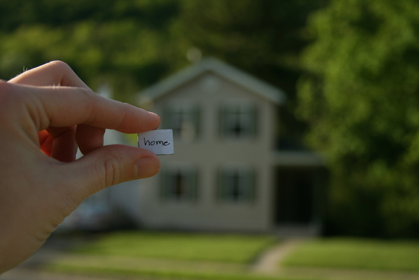

7 services using open data and innovation that you (probably) already use
Open innovation and open data can seem like strange concepts, but they drive many of the apps, products and services we use daily. Here are seven of our favourites
Whether to find your next job or avoid hills on your bike route, open data could be helping you in ways you'd never even considered. CC BY 2.0, uploaded by [FFCU](https://www.flickr.com/photos/freeforcommercial_use/14168590969/in/photolist-nA2Jtc-5bBfaY-fMP9UF-hh2cLU-853njd-62rgEM-3kQ4C-5jLCeJ-dm8qwa-4rdwH9-2jnjNk-4JzDnv-6A1K3A-4nrdr7-73dc96-dprmDw-2xXVD-67FAoM-9mSbeq-CWFJ8-4S23zf-btg1vc-jWAYqn-9uP45G-2r4ZrU-8VbZji-nypAvz-scgpd-fN6Kr1-rUPbx-tUzUZ-fN6KDY-9aXCdS-ohpLzS-r7uSc2-6xCa4p-fN6L7A-7vf2uo-gYkFmz-fN6Lxb-oTe5Lp-fMPaka-cuEX1U-7wuaph-ps4JuT-4Q2d62-6EjGJ4-dxwXsh-r7yRGh-pL4jN9 “FFCU").
By Jamie Fawcett and Anna Scott
We don’t always think about it, but data is everywhere. It powers our digital lives and helps turn the cogs of the apps and digital services we use every day.
But data is often shy, invisible and undetected, lurking beneath the surface of our smartphone screens as we navigate around our cities or search our new favourite dance jams.
At the ODI, we like to think of data as infrastructure. You know, like water pipes or telephone lines. We know these things exist, but we don’t really need to think about them, as long as they keep working and providing us with what we need to keep functioning.
But we do need to think about our data infrastructure, because it isn’t as strong or open as it needs to be – yet. If we work on making as much important data open – for anyone to access, use and share – then more people will be able to build services on top of it. Services we need to get from A to B. Services we need to help us find somewhere to live. And, well, services we need to help find our next favourite dance jams.
1. Citymapper
This award-winning navigation service, now serving 20 major cities (and counting), allows users to seamlessly navigate their urban jungles and make best use of their public transport options, from buses to cycle hire. Citymapper depends on real-time open transport data.
2. Wikipedia
Whether researching for an assignment, looking up different species of frog or finding out more about the people who run our countries, we turn to Wikipedia for many of life’s questions. The world’s most popular online encyclopedia is built on the spirit of open. It is underpinned by open source software and provides openly licensed text, content, definitions, data and much more.
3. Spotify
This revolutionary music streaming service does all kinds of fun stuff with listening data and the really clever bits come together in their recommendation and discovery functions. When it comes to finding out about artists themselves, Spotify turns to clued-up fans, using the fan-created and openly licensed MusicBrainz.
What gems have you found in Discover Weekly? CC BY 2.0, uploaded by [Seika](https://www.flickr.com/photos/nseika/8921102852/in/photolist-eAjZ59-atPLiN-fCj8WL-sFreNm-sbGgrA-6mfooP-H7W7L8-kobsaf-rb6bBd-k4X8qz-p4VEhA-bBmgN7-4rT6DW-4Tg2Gs-e5XP6K-e64rYj-54nK5s-5y4B1j-7np9xv-9dQurW-e37jvV-eoVbCk-aLNBGX-e37hdc-4d9hgu-6cmnuL-984ZGT-h98Q48-ik78vy-no917U-8oWFuH-8YB19G-5XoD2z-aFD95M-pstLaj-7X7mFq-kFJQQv-9P1Wi6-qRtqcU-kXtrVz-bBmhcQ-6JKPdi-68KWAb-gLkpRF-8CVZ2Y-6iP3Nq-bDBzs2-6iJSbH-2qomyb-2QSgnA “Seika").
4. Zoopla
This online property portal helps buyers and renters make sure their dream home isn’t actually a nightmare in disguise. Using the systems they acquired with UpMyStreet, they use house price data and data on everything from schools and crime to council tax rates, to help you decide whether that move is best for you and your family.

Zoopla helps you find your dream home. CC BY 2.0, uploaded by [Sarah Reid](https://www.flickr.com/photos/sarahreido/4614710833/in/photolist-82MAKT-9LFzSB-acLyxc-dR36NZ-4oekn-6HPa8t-om7KzP-7cdKFe-caMKnh-pPekdF-cJZVpw-FkqJq-6fsKNw-4949io-bAE3wK-acKXSa-rSWafc-dCXL6i-3JBapY-HuXpEA-ri1J45-aF3MR3-z69gT-7icSC4-qHxTX4-Md3YG-acPnUN-e2bh2N-nXu85b-dQoLm2-4SZ2er-72u6S-8vBVVr-pZP5kS-8vEXcj-4adwvV-Hn65x5-6uimKa-8EMb4N-94dP6i-28Wxw-kDEuBn-pozBhX-HUy2hk-6nwvFQ-kFYCBJ-iEZMGh-chRY5h-repxmV-5U8hKZ “Sarah Reid").
5. CycleStreets
This cycle journey planner helps pedal pushers get from A to B without getting stuck in traffic or finding themselves gasping their way up steep hills they weren’t expecting. CycleStreets gives you options based on how quiet routes are, how many traffic lights they have and how steep their hills are. It even gives you the added satisfaction of knowing how many calories you burn and the CO2 emissions you avoid by not driving. It does all this based on OpenStreetMap, a collaboratively created, openly licensed alternative to commercial maps.
6. Adzuna
Job-seekers, rejoice! This search engine pulls in job postings from across the internet to help you find your perfect role. It also helps you prepare by telling you how much competition you’re likely to face, using data from the Office for National Statistics. The company also provides free access to its jobs data via an application program interface (API).
Finding your next job needn't be a slog. CC BY 2.0, uploaded by [Markus Spiske](https://www.flickr.com/photos/markusspiske/19156112311/in/photolist-2eKYhW-iMiDL7-c2BeH-zJQJ1-qG96V-a6WEoN-4TmY2M-4M8DW-8xU1C6-4ZsG3g-4X76QV-a6WESs-5qBLoQ-2dfHgv-6Rd8Vd-Dfoja-5Y3mn1-Ggfq79-54iME-CWkN6i-vd31vx-r1wqQN-FLdYd5-uerzHy-uTShjU-vapRWs-vbL5Nt-uTSWJ7-uTSVob-DoT2Fa-GYqZxp-Hhffw6-vbLbzD-HAtcbc-HW4v2L-HW4v1U-GfMGLW-EJhDZm-2AMNSW-8yRYS3-6pL1if-9ciwaV-6Rd8Zh-6R97zD-C7bHDF-9mcT4Y-7oi68o-xHhhiB-4CzuiD-GYPvEC “Markus Spiske").
7. Flickr
The photo-sharing service lets you publish your photos under a variety of creative commons licences, so others can use your snaps, whether they’re of ‘spectacular’ vistas or ‘gritty’ urban scenes. While this might not strictly count as open data, it’s a service that allows users to contribute their own content to the global digital commons.
Have we missed your favourite app or service that uses open data? Tell us about it by tweeting us at @ODIHQ or emailing [email protected] and we’ll add it to our next listicle.